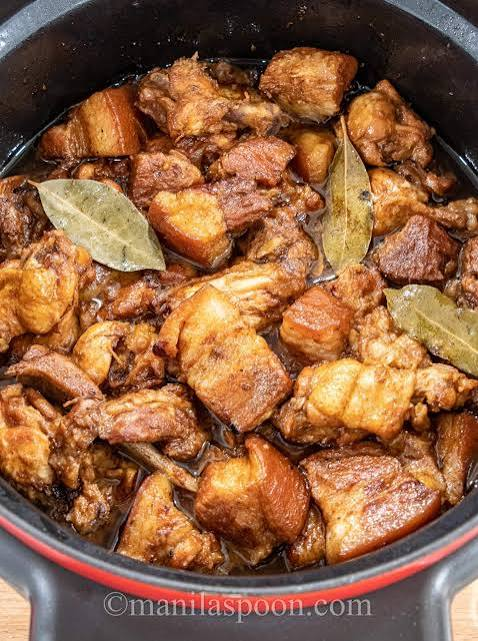

Adobo Recipe
Home

Description
Adobo is a popular Filipino dish made with meat (usually chicken or pork)
cooked in a savory sauce made from vinegar, soy sauce, garlic, and other
spices.
Recipes
- 2 lbs chicken pieces or pork belly
- ⅓ cup soy sauce
- ½ cup cane or white vinegar
- 5 cloves garlic, crushed
- 1 tbsp whole black peppercorns
- 3–4 pieces dried bay leaves
- ½ cup water
Instructions
- Marinate: Mix the meat, soy sauce, garlic, peppercorns, and bay leaves
in a pot for 15 to 30 minutes.
- Sear: Take the meat out of the liquid. Brown it lightly in a hot pan
for 1 minute on each side.
- Simmer: Put the meat back in the pot. Pour in the leftover marinade
and half a cup of water.
- Boil: Bring the liquid to a boil. Then cover the pot, lower the heat,
and cook for 25 to 35 minutes until the meat is tender.
- Add Vinegar & Reduce: Pour in the vinegar. Let it bubble gently
without stirring for a few minutes, then simmer until the sauce thickens
to your liking